Navigate with → through chapters and ↓ inside chapters.
And also esc if you are hurry.
It is possible to search complex statements in few characters.
Example:
I look for word "get" but not followed by 'String'.
get(?!String)0\d([\s.-]?\d\d){4}[\w.]+@\w+\.\w{1,3}Example: We want to add a class 'blue' to all div and span
title
The replacement expression
str.replace( /(<(div|span).*?)( class="(.*?)")?(?![^>]*class=")/g, '$1 class="$4 blue"');The result
title
Almost all languages accept RegExp, sometimes with small differences:
Perl, Python, Ruby, PHP, Java, C++, SQL, ...
And of course JavaScript
Many command can use RegExp, like:
grep, find, less, ed, ex, sed, awk
|
this.trigger('user:create:success', user); |
| Remove all spaces or tabulations at start and at end of each line of a file (Trim). |
Sublime, vi, emacs, ...
Almost all text editors support RegExp.
Sometime we need to activate it.
For Sublime, CTRL+f (to start a search) then ALT+r to enable/disable regular expression search.
In the new interface search expression is a RegExp.
All methods using RegExp are defined in ECMAScript 3rd edition.
They are usable by all browsers 😸.
var reg = new RegExp('toto', 'gim');
var reg = /toto/gim;
It is more efficient to use litteral notation, because it is compiled only once.
The constructor is usefull only when you have to built dynamically the expression.
var reg = /toto/gim;
toto is the expression.
This part will be evaluated to find any matches in a string.
The escape character is \
| Expression | Matches |
|---|---|
| \\ | \ |
| \/ | / |
| \n | (Line Feed) |
| \r | (Carriage return) |
| \t | (Tabulation) |
| ... | |
var reg = /toto/gim;
gim are flags.
They are parameters.
By default each character must be match once
and one by one.
/lettres/A character sets match one of the enclosed characters.
/[abcd]//f[ae]l/| fal |
| fel |
| fil |
| fol |
| ful |
| fyl |
| fael |
The - character build a range of characters. All characters between the two are included in the set.
/f[a-t]l/| fal |
| fel |
| fil |
| fol |
| ful |
| fyl |
To add - to the set, we can escape it or put it at the start or at the end of the set.
/f[at-]l/
/f[-at]l/
/f[a\-t]l/
| fal |
| fel |
| fil |
| fol |
| ful |
| fyl |
| f-l |
When a set begins with ^, it matches everything except the enclosed characters.
/f[^aei]l/| fal |
| fel |
| fil |
| fol |
| ful |
| fyl |
| \d | [0-9] | (digit) | \D | [^0-9] |
| \s | [ \t\v\r\n\f] | (whitespace) | \S | [^ \t\v\r\n\f] |
| \w | [_a-zA-Z0-9] | (alphanumeric) | \W | [^_a-zA-Z0-9] |
|
|
. character is a wilcard character it matches all characters.
⚠ in JavaScript, it is equivalent to [^\r\n]
|
|
N character must be there at least min times.
N character must be there no more than max times.
/fe{1,3}l/| fl |
| fel |
| feel |
| feeel |
| feeeel |
/fe{1,}l/When maximum is not given, we look for the character at least minimum times.
| fl |
| fel |
| feel |
| feeel |
| feeeel |
/fe{2}l/When only one value is given, we expect the character to be there this value times.
| fl |
| fel |
| feel |
| feeel |
| feeeel |
? is equivalent to {0,1}
/fe?l/| fl |
| fel |
| feel |
| feeel |
| feeeel |
* is equivalent to {0,}
/fe*l/| fl |
| fel |
| feel |
| feeel |
| feeeel |
Do not get confused: * does not represent a character itself.
+ is équivalent to {1,}
/fe+l/| fl |
| fel |
| feel |
| feeel |
| feeeel |
By default, the matches is the greatest that can be found
(greedy mode).
In JavaScript, there is no flag to set an Ungreedy mode.
/QQ[qQ]+QQ/When ? is after a quantifier, the quantifier becomes ungreedy
/QQ[qQ]+?QQ/All characters include in () are match together.

|
|||

|
/f(ae)*l/| fl |
| fal |
| fael |
| feal |
| faeael |
| faeel |
| indicates that the pattern must match any of expression around this operator.

|

|
The 'scope' of the | is its group
/a(b|cd)/ When you can use both [] and | it is more efficient to use [].
Even if the results is the same.

|
|
\N (with N, a digit from 1 to 9) matches the pattern matched by a previous group.
N is the position of the captured group in the expression.
|
|
/(?:a|bc)(["'])X\1/| a"X" |
| bc'X' |
| a"Xa |
If you don't need to re-use a group, use a non-capturing group.
Assertion are zero-width characters.
They only check that, at the current position, the expression matches another expression.
^ matches the start of the string.
If the flag m is set, ^ matches the start of each line.
/^abc/| abc |
| Xabc |
| abcX |
| XabcX |
$ matches the end of the string.
If the flag m is set, $ matches the end of each line.
/abc$/| abc |
| Xabc |
| abcX |
| XabcX |
\b matches the start or the end of a word.
It matches the moment where characters change between
\w and \W.
/\babc/| abcX |
| Xabc |
| XXX abcX |
\B is the opposite of \b.
It matches the moment between 2 \w or 2 \W.
/\Babc/| abcX |
| Xabc |
| XXX abcX |
Look ahead assertion checks if the current pattern is followed by the given expression.
/a(?=b)/This group is not a capturing group and is even not part of the final pattern.
/\w+(?= stuff)/| stuff |
| all stuffs |
| anystuff |
| I look for a stuff |
This assertion checks if the current pattern is not followed by the given expression.
/^(?!\d)\w+$/| var1 |
| Var2 |
| _var3 |
| 4var |
| var 5 |
These assertions are not supported in JavaScript. 😿
Look behind assertion check that the current pattern is (not) preceded by the given expression
|
|
There are some tricks to support these assertions in JavaScript.
For example, you can reverse the string and then using lookahead assertions.
In JavaScript, the string.replace method allows to reuse captured pattern
var text = 'This is a ~small~ text.';
var str = text.replace(/~(.+)~/, '[$1]'); // This is a [small] text.
The 2nd argument can be a function callback
var text = 'This is a ~small~ text.';
var str = text.replace(/~(.+)~/,
function (pattern, captured1, offset, string)
{
return 'new value';
});
| pattern | ~small~ |
| captured1 | small |
| offset | 10 |
| string | This is a ~small~ text. |
There will be as much arguments as you have captured groups in your expression.
There are some special characters for your expressions to handle specific cases
| \0 | Matches a NUL character. (Not to be confused with \1-\9) |
| \uhhhh |
hhhh are 4 hexadecimals digits. Matches the Unicode characters value hhhh. |
| \xhh |
hh are 2 hexadecimals digits. Matches the code characters value hh. |
| \cX |
X is a letter from [A-Z]. Matches a control-X character. |
| [\b] | Matches a backspace character. (Not to be confused with \b) |